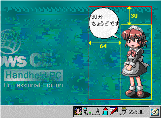

transparent_paletteは、透明パレットを指定します。この画像を、人物の周りを透明にして表示する場合、その色の画像のパレット番号をtransparent_paletteに記述します。この場合は16色BMP画像の11番目のパレットなので、tranparent_palette=11となります。
ただし、24bit/pixelの画像の場合は、transparent_paletteを指定することは出来ません。透明指定は、Mコマンドを使用することでも可能です。
書式： Gnum,filename,x_pos,y_pos[,transparent_palette]解説
num : 画像データの番号 (#コマンドで使用) filename : 画像データのファイル名 x_pos : アニメーション全体の領域からのX座標 y_pos : アニメーション全体の領域からのY座標 transparent_palette : 透明パレット指定 (省略可能) (例) g0:pic00.bmp,64,30,11
画像データを指定します。
Gコマンドの記述数に制限はありません。ミニッツマスコットで扱える画像フォーマットは、1,2,4,8,24bit/pixel (1色,4色,16色,256色,24ビットフルカラー)のBMP画像です。
numは、#コマンドで使用する番号です。画像ファイルごとに固有に指定します。
filenameは、画像のファイル名を指定します。
x_pos、y_posは、Dコマンドで指定したアニメーション全体の領域の左上座標を原点としたときの、画像の表示座標を指定します。下図では、x_pos=64、y_pos=30です。

transparent_paletteは、透明パレットを指定します。この画像を、人物の周りを透明にして表示する場合、その色の画像のパレット番号をtransparent_paletteに記述します。この場合は16色BMP画像の11番目のパレットなので、tranparent_palette=11となります。
ただし、24bit/pixelの画像の場合は、transparent_paletteを指定することは出来ません。透明指定は、Mコマンドを使用することでも可能です。